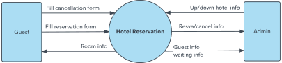

Data Flow Diagrams
- Maps out the flow of information for any process or system
- Shows data inputs, outputs, storage points, and routes between destinations
Components of a DFD
External Entity
- Outside system that sends or receives data
- Communicates with the system in the diagram
- Sources and destinations of information entering or leaving the system
- Drawn on the edge of the diagram
Processes
- Anything that changes the data, producing an output
- Described by a short label
Data Store
- Files which hold information for later use (eg. database)
- Has a simple label
Data Flow
- The route that the data takes between the external entities, processes and data stores
- Shown with arrows
- Labelled with a short data name
Levels of DFD's
Level 0 (Context Diagram)
- Basic overview of the whole system
- Shows the sytem as a single high level process, with its relationship to external entities

LLvel 1
- Provides a detailed breakout of pieces of the level 0 DFD
- Main functions of the system highlighted
- High level process of the level 0 DFD is broken down into its subprocesses

Level 2
- Goes one step deeper into parts of the level 1 DFD